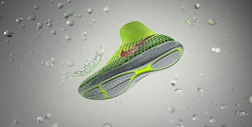
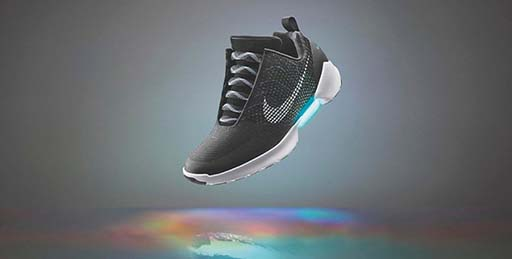

La marca estadounidense Nike ha lanzado el Nuevo calzado Nike LunarEpic Flyknit Shield, unas zapatillas que ofrecen las mismas ventajas que las Nike LunarEpic Flyknit, ajuste imperceptible, sensación fluida y suavidad superior que se adapta al cuerpo en movimiento, además de una estructura para todo tipo de climas, que asegura que los atletas puedan disfrutar de sensaciones de confianza y comodidad cuando corren bajo las desapacibles condiciones climáticas de otoño e invierno.
La parte superior de Flyknit de una sola pieza consta de un hilo de TPU revestido, duradero y repelente al agua, y de un botín interior repelente al agua que mantiene el pie seco y en calor. El diseño de la suela hecho a láser —inspirado en las ruedas de coche— ahora cuenta con ranuras que aumentan el área de superficie, repelen el agua y maximizan la tracción incluso más.
El cuello a media altura sigue proporcionando sujeción y un ajuste dinámico, a la vez que resalta el movimiento natural del tobillo al pie. Los diseñadores de Nike investigaron y probaron en los runners los diferentes diseños geométricos para la suela, durante el invierno con el suelo cubierto de nieve y en los caminos llenos de barro de las Montañas Rocosas en Colorado.
A principios de la primavera, volvieron a probar estas suelas con el deshielo, cuando es necesario una mayor tracción y resistencia al agua. Finalmente, dieron con un resultado que se agarra a diferentes superficies a la vez que expulsa el agua de la suela con cada zancada. El diseño resultante es una suela de espuma de unidad inyectada hecha a láser de alta precisión, que mantiene la transición del talón al antepié y que favorece el retorno de energía.
Compromiso con la sostenibilidad
Cada puntada de la parte superior de una zapatilla dotada de tecnología Flyknit es un trabajo de ingeniería que proporciona rendimiento máximo, a la vez que produce un 60% menos de residuos que los métodos tradicionales de corte y confección. Desde 2012, la tecnología ha reducido casi un millón y medio de kilos de residuos. En la competición de este verano, más atletas que nunca llevarán Nike Flyknit.

Finalmente, después de 27 años, las zapatillas Nike que se atan solas inspiradas en las que utilizó Marty McFly (Michael J. Fox) en "Volver al Futuro II" (1989) se harán realidad desde el 1 de diciembre para todo el mundo y básicamente para el que pueda pagarlas, ya que costarán u$s 720 (unos $ 11.000).
Se trata de las HyperAdapt 1.0, que viene dando qué hablar desde 2014, cuando se comenzaron a difundir los supuestos primeros borradores.
Los nuevas Nike suponen un megadesarrollo de "ingeniería digital, eléctrica y mecánica en un producto diseñado para el movimiento", según dio a conocer la marca en un comunicado.
Vienen en colores negro, azul y blanco, y en principio estarán disponibles en la Nike Soho Store y en el Nike+ClubHouse de Nueva York, donde los interesados podrán probar el producto antes de comprarlo.
De acuerdo al sitio Merca2.0, la idea de Nike es que los clientes hagan un "trial" antes de decidirse, ya que el calzado no es barato como para después desencantarse con la novedad.
Por otra parte, antes de ir a las tiendas hay que pedir un turno para la experiencia en Nike.com o a través de la app de la marca.
Asimismo, la compañía anunció que un pequeño grupo de usuarios de la app tendrá acceso limitado a las zapatillas antes del 28 de noviembre. A estos usuarios se los notificará a través del sistema de la misma aplicación y se les ofrecerá la oportunidad de comprarlas antes que nadie.
En un primer adelanto, Nike anunció que la fecha de lanzamiento de las zapatillas sería el 28 de noviembre, pero se pospuso unos días.
Equipadas con tecnología HyperAdapt, vienen con un sistema de ajuste automático de cordones, también llamados "robocordones".
De la misma forma que en la famosa película, tienen una luz LED que indica el nivel de carga de la batería, la cual puede durar hasta dos semanas, antes de ser recargada en sólo tres horas.
Hace unos meses Nike lanzó una edición limitada de sólo 89 pares de las famosas PowerMags, un modelo mucho más parecido a las del film con el fin de recolectar fondos para la Fundación para la Investigación del Parkinson que dirige Michael J. Fox, y las primeras fueron entregadas al actor que justamente padece esta enfermedad. Al parecer el interés y la aceptación hicieron que la empresa reconsiderara su postura y por fin lanzara para todo el público las conocidas zapatillas.